Canil Relíquias do Cerrado
Especializado em Cães RottweilerO Canil Relíquias do Cerrado é especializado na criação de cães Rottweiler, unindo a força e a imponência da raça a um equilíbrio comportamental exemplar. A iniciativa destaca-se por lapidar exemplares focados na lealdade, na guarda e na preservação das principais características do padrão da raça.
+0
Filhotes Vendidos
+0
Clientes Atendidos
+0
Cães Adestrados

Sobre
Uma história de sucesso!!!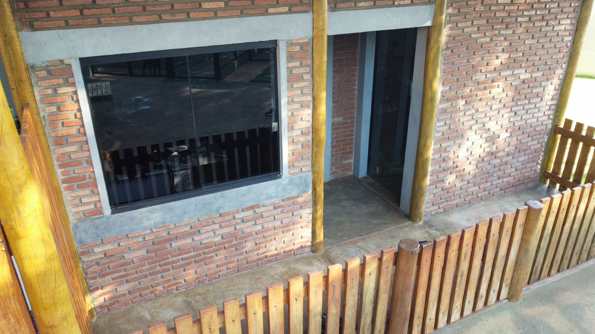
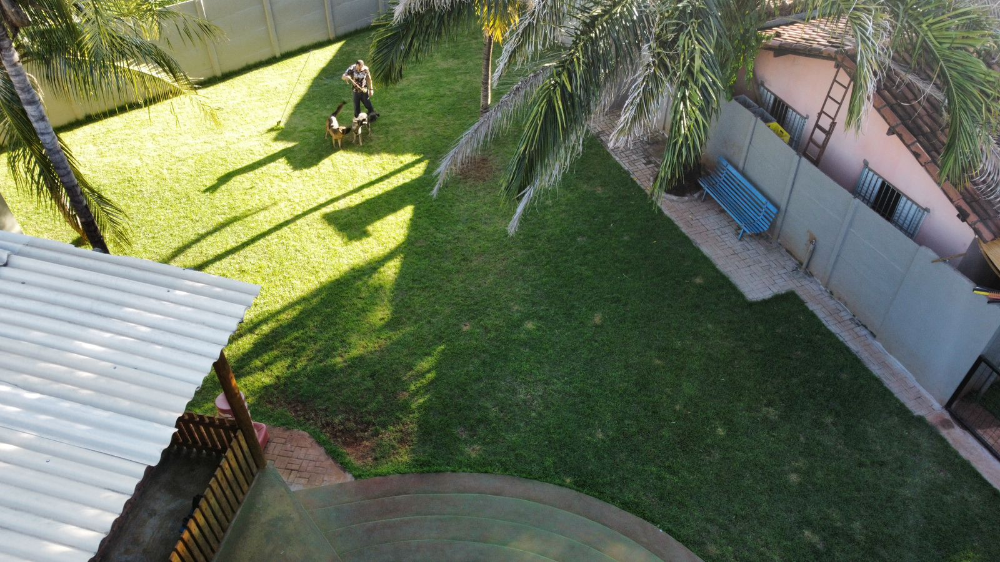
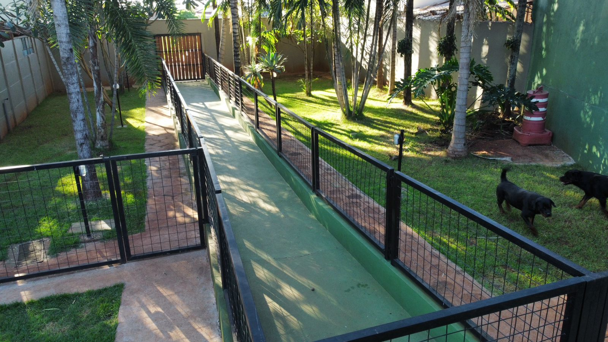
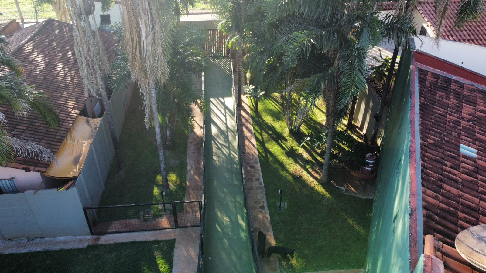
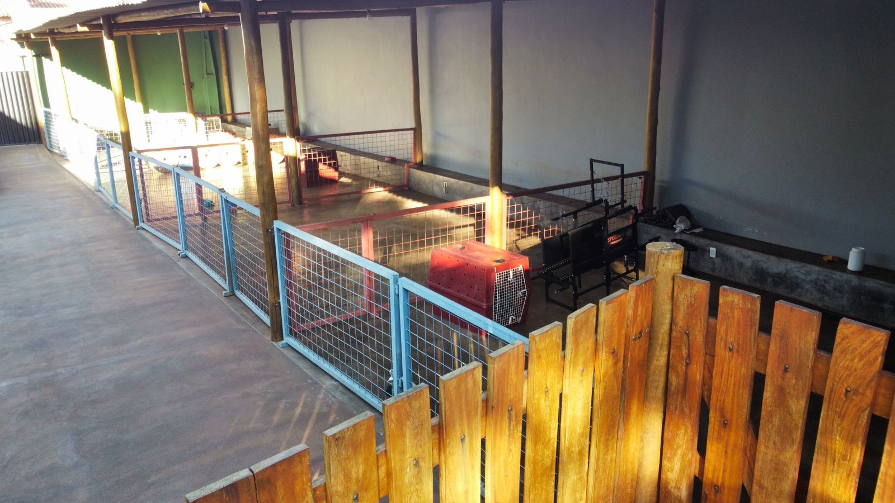
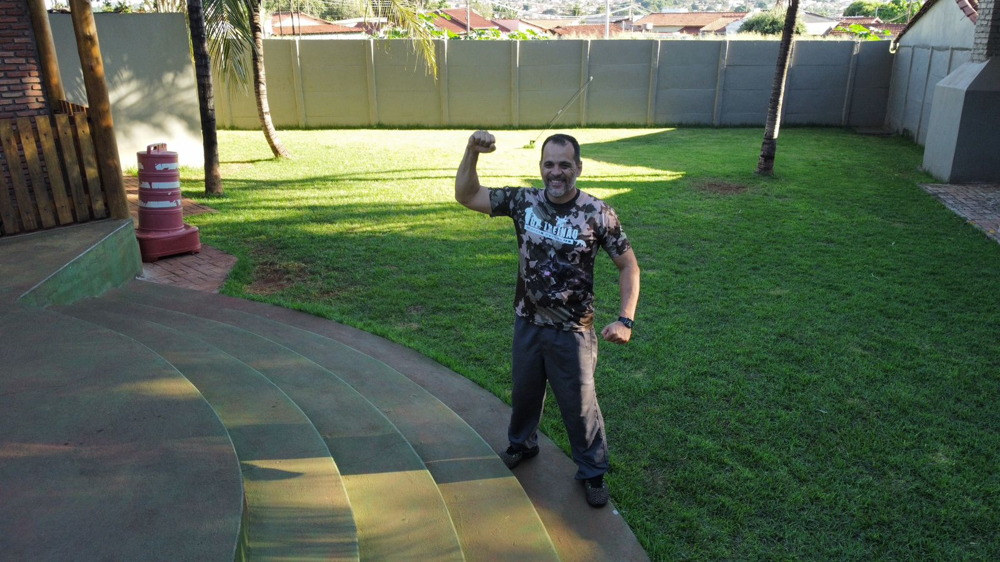
A história do Canil Relíquias do Cerrado começou em 02 de janeiro de 2017, com o nascimento do Athos Ecb
Fur Reines Blut. Athos é um exemplar impressionante da raça rottweiler, presente do meu primo e grande
amigo Leonardo Borges, proprietário do Canil ECB Furn Reines Blut. Com o desenvolvimento de Athos e a
manifestação de todas as qualidades desejadas na raça, Léo decidiu enviar uma cadela chamada Jade para
acasalar com Athos, e assim nasceu o interesse pela criação.
Um marco importante nessa trajetória foi meu primeiro treinamento de guarda e proteção com o treinador e
figurante Márcio Cerqueira, renomado no treinamento de cães, especialmente para o esporte IGP. Durante
esse treinamento, Athos demonstrou suas habilidades e nos surpreendeu com seu temperamento e qualidade
para a função.
Combinando beleza, conformação, saúde, temperamento e habilidades para a função, percebi o valor
genético que tinha em minhas mãos. Estabeleci parcerias com Léo, adquiri mais matrizes e mantive essa
linha de seleção de cães, buscando animais equilibrados, belos, saudáveis e que também apresentassem
características de temperamento e função para o trabalho.
Assim, continuamos a produzir filhotes selecionados que atendem e satisfazem muitas famílias em todo o
Brasil.
Serviços
Qualidade no que fazemos!!!Venda de Filhotes
Produzimos filhotes de rottweiler visando a seleção genética, buscando animais aptos, beleza racial, estrutura funcional, saúde física e equilíbrio entre os impulsos.
Hospedagem
Prestação de serviço de hospedagem para viagens e treinamento para todos os tipos de adestramento.
Adestramento Básico
Ensinamos os 5 (cinco) comandos básicos para uma comunicação com seu cão. Os cinco comandos são: senta, deita, fica, aqui e junto (sem puxar a guia).
Adestramento Avançado
Ensinamento de truques como cumprimentar, dar a pata, rolar, fingir de morto, brincadeiras físicas e cognitivas, entre outros.
Guarda e Proteção
Treinamento para a proteção do território e para guarda pessoal.
Modificação Comportamental
Xixi e cocô no lugar certo, não pular nas pessoas, não fugir, respeitar limites (portas, portões), evitar destruição de objetos, ansiedade de separação, dependência emocional, mordiscadas, latidos em excesso, comportamento agressivo e possessivo, medo.
Consultoria Comportamental
Atendimento presencial e on-line para identificação dos gatilhos que motivam os comportamentos a serem modificados e a apresentação de um plano estratégico de trabalho para a execução e acompanhamento das tarefas e resultados.
Nossos Cães
Somente cães com pedigree!!!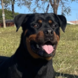
Hanna
Rottweiler
Fêmea
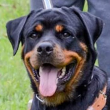
Sophie
Rottweiler
Fêmea
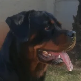
Luna
Rottweiler
Fêmea
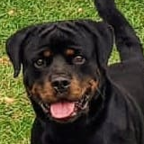
Taurus
Rottweiler
Macho
Diretrizes para Seleção
Entenda cada diretriz de seleção perfeita para cães!!!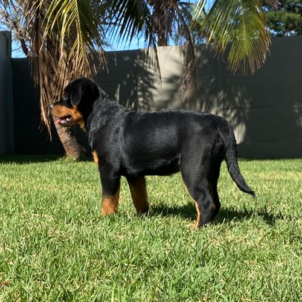
Conformação Física
Refere-se ao tamanho médio a grande, corpo musculoso e compacto, cabeça larga e proporcional ao corpo, focinho curto e largo, orelhas triangulares e caídas, olhos de tamanho médio e cor escura, pescoço forte e moderadamente longo, peito amplo e profundo, dorso reto e nivelado, membros anteriores retos e paralelos, membros posteriores fortes e bem angulados, e movimentação fluida e poderosa. Minha criação atende as diretrizes da FCI representada aqui no Brasil pela CBKC. Fonte: Fédération Cynologique Internationale (FCI) e American Kennel Club (AKC).
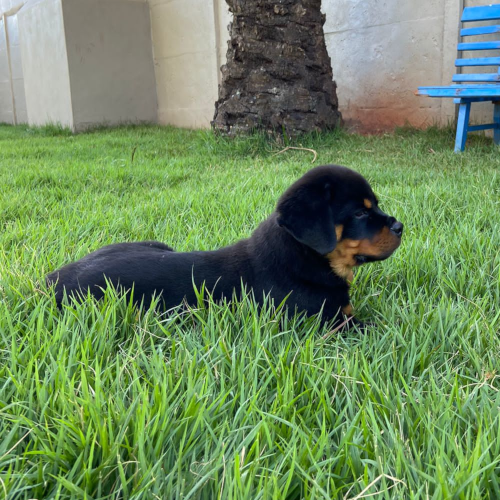
Temperamento
Refere-se à personalidade e comportamento do cão. Isso inclui como o cão interage com humanos, outros animais e o ambiente ao seu redor. O temperamento pode ser influenciado por uma combinação de fatores genéticos e ambientais.
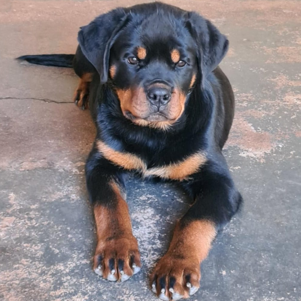
Beleza
Refere-se à aparência física do cão. Isso pode incluir características como a cor e o tipo de pelo, a forma do corpo e a expressão facial. A beleza de um cão é muitas vezes subjetiva e pode variar dependendo das preferências individuais.
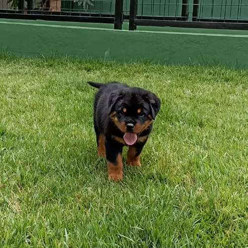
Saúde
Refere-se ao estado físico geral do cão. Isso pode incluir tudo, desde a condição física geral do cão até a presença de quaisquer condições médicas ou genéticas. A saúde de um cão pode ser avaliada através de exames veterinários regulares e testes genéticos.
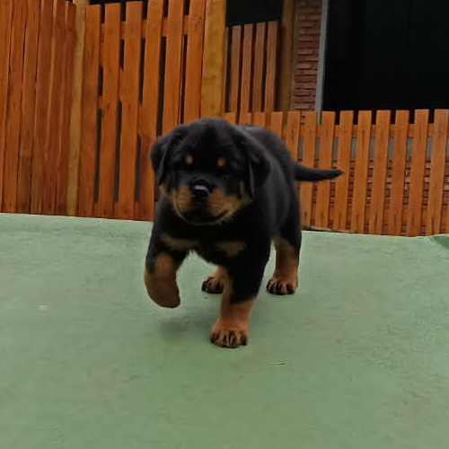
Funcionalidade
Refere-se à capacidade do cão de desempenhar certas tarefas ou funções. Isso pode incluir tudo, desde habilidades de trabalho, como pastoreio ou busca e resgate, até habilidades de companhia, como ser um bom animal de estimação para a família. A funcionalidade de um cão pode ser avaliada através de testes de desempenho e observação do comportamento do cão em várias situações.